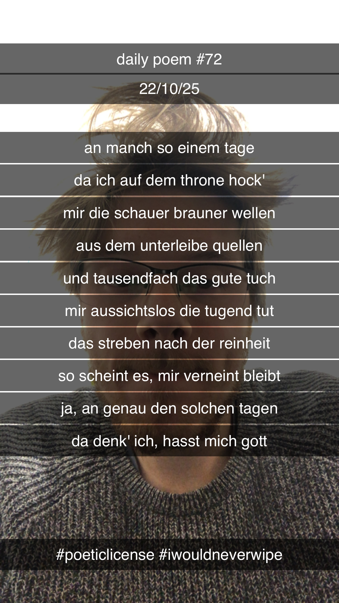

Qualen am Klosett
[72]An manch so einem Tage,
Da ich auf dem Throne hock' –
Mir die Schauer brauner Wellen
Aus dem Unterleibe quellen;
Und tausendfach das gute Tuch
Mir aussichtslos die Tugend tut;
Das Streben nach der Reinheit –
So scheint es – mir verneint bleibt –
Ja, an genau den solchen Tagen,
Da denk' ich, hasst mich Gott.
